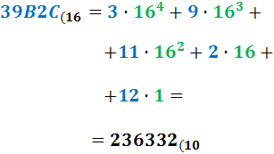

SISTEMAS DE NUMERACIÓN
Un sistema de numeración es un conjunto de números que poseen ciertas reglas y convenios para nombrar y escribir los números naturales. Entre ellos podemos encontrar, los números binarios, octales, decimales y hexadecimales. La utilidad de los sistemas de numeración en el tema que nos ocupa es determinante. La razón es que todos los ordenadores utilizan el sistema de numeración binaria para representar la información (no sólo los números). Dentro de una red cada equipo tiene un identificador único denominado dirección IP y que, para conocerlo en profundidad, necesitaremos conocer su representación decimal y su representación binaria.
Los sistemas de numeración actuales son posicionales, es decir, un símbolo puede tener un significado diferente en función de su posición. Las características de los sistemas posicionales son las siguientes
- Se emplea un número finito de símbolos, dígitos o cifras, lo que determina la base del sistema. Por ejemplo el sistema decimal utiliza los dígitos: 0,1,2,3,4,5,6,7,8,9 para representar los números y como estos símbolos son diez se dice que la base es 10.
- Cada cantidad viene expresada por una secuencia finita de símbolos del sistema.
- La cantidad total expresada se obtiene sumando el valor de cada uno de los símbolos.
- El valor de cada simbolo depende de sí mismo y de la posición que ocupa dentro de la secuencia de símbolos. Normalmente tendrá más valor cuanto más a la izquierda se sitúe.
- Los sistemas de numeración más usados en informática y, por tanto, en las redes de ordenadores son los siguientes:
SISTEMA DE NUMEROS DECIMALES
La base del sistema es 10. Se utilizan los dígitos 0,1,2,3,4,5,6,7,8,9.
El valor de cada dígito está asociado al de una potencia de base 10, número que coincide con la cantidad de símbolos o dígitos del sistema decimal, y un exponente igual a la posición que ocupa el dígito menos uno, contando desde la derecha. Este timpo de sistema numérico es el más utilizado.
SISTEMA DE NUMEROS BINARIOS
La base del sistema es 2. Este sistema de numeración utiliza los dígitos 0 y 1.Con n dígitos binarios se pueden representar los enteros comprendidos en el rango. Habitualmente se utiliza las máquinas electrónicas digitales ya que éstas solo pueden representar dos estados. En particular lo utilizan los ordenadores.
Este número es 1×8 + 1×4 + 0×2 + 1 + 1×(1/2) + 0×(1/4) + 1×(1/8)
(=13,625 en decimal)
De la misma manera que en el sistema decimal, se pueden poner números a la izquierda o a la derecha del punto decimal, para indicar valores mayores o menores que uno. En el sistema binario:
Conversion de decimal a binario
El proceso para convertir un numero decimal a binario es fácil. Para iniciar, dividimos el número decimal que queremos convertir en 2, anotamos el residuo y continuamos dividiendo el cociente que obtuvimos de la división. Tomaremos esta division como entera sin decimales, al no ser posible dividir de forma entera el dividendo, definiremos el resto como 1 y seguiremos dividendo el cociente entre 2 el cociente obtenido sin decimales, logrando así una secuencia con los restos de cada división y el cociente de la división final que tendra como resultado 1.
En este proceso habremos creado una cadena de restos 0 y 1 que al ordenarlos desde el final hasta el principio obtendremos el numero binario correspondiente al numero decimal que hayamos querido convertir.
Conversión de binario a octal
El proceso para saber como convertir cualquier numero binario a octal es sencillo, dicho proceso de conversión se basa en empezar por separar el numero binario en bloques de TRES (3) dígitos empezando desde la derecha hasta la izquierda, quedando tal que así:
Hecho esto tomaremos ayuda de la tabla de conversión que hemos visto mas arriba y sustituiremos cada bloque de dígitos binarios por su correspondiente equivalente en octal, de esta forma y así de rápido ya sabes como convertir un numero binario en octal de forma manual.
Suma numeros binarios
Se tienen cuatro combinaciones posibles:
Es tan sencilla como sumar en decimal, aplicando la tabla que se encuentra encima. Pero la suma de 1+1, que sabemos que es 2 en el sistema decimal, debe escribirse en binario con dos cifras (10) y, por tanto 1+1 es 0 y se lleva una unidad, que se suma a la posición siguiente a la izquierda, se conoce como bit de acarreo. A continuación podrás observar un video que te ayudara a comprender mejor:
SISTEMA DE NUMEROS OCTALES
En el sistema de numeración octal, los números se representan mediante ocho dígitos diferentes: 0, 1, 2, 3, 4, 5, 6 y 7. Cada dígito tiene, naturalmente, un valor distinto dependiendo del lugar que ocupe. El valor de cada una de las posiciones viene determinado por las potencias de base 8.
Conversión de decimal a octal
En caso de necesitar convertir un número decimal a octal, empezamos dividiendo el número decimal por 8, tenemos en cuenta el residuo y continuamos dividiendo el cociente, esta división la hacemos como entera. Al finalizar tendremos una cadena de números que iran desde el 0 al 7, y comenzarmos a organizarlo desde el residuo del último cociente hasta el primero.

Conversión de octal a decimal
En el caso de convertir un número octal a decimal, lo primero que haremos es enumerar las cifras de los números de derecha a izquierda empezando por 0 (como se muestran en los números de verde).

Después organizamos las cifras del número octal, empezando por la derecha, de manera vertical y las multiplicaremos por 8 elevado por el número de su enumeración. Cuando obtengamos el resultado de cada multiplicación los sumamos y el total que resulte será número decimal, en este caso el resultado es el número en rojo.
Suma números octales
El procedimiento para sumar números octales es muy sencillo. Ubicaremos los números como si estuviéramos haciendo una suma decimal y empezaremos a sumar. Cuando el resultado de la suma sea menor o igual a 7 lo dejaremos tal como está, en cambio, si es mayor o igual a 8 le restaremos al resultado de la suma 8 y acarreamos 1 al número que sigue, el número de acarreo depende de cuantas veces necesitemos restar el 8 para que el número resultante este entre los dígitos del sistema octal, por ejemplo, si una suma nos da 16 tendremos que restar dos veces 8 para que el número sea menor o igual a 7, e indicaremos esas dos restas carreándolas a la cifra siguiente.
SISTEMA DE NUMEROS HEXADECIMALES
